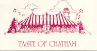

Anne's Cape Cod Favorites
| |
RestaurantsRestaurant List and Reviews have not been updated since 2001. Go directly to restaurants in:
The telephone area code for all the Cape is 508.
Beechcroft Inn 1360 Rte 6A, 896-9534My best new find with a new chef the summer of 1999. Smoked fish chowder with crunchy corn was wonderful. Then it stopped serving dinner, but I see it on the web so it may be back in 2002. Bramble Inn 2019 Rte 6A 2019 Rte 6A, 896-7644Fixed price for a 3-course dinner. Perhaps overly formal and expensive, but pleasant. Brewster Fish House 2208 Rte 6A, 896-7867Excellent food. Lots of wines by glass. No reservations. Great fried oysters & lobster bisque. Innovative, interesting fresh fish dishes. Chillingsworth 2449 Rte 6A, 896-3640We had a very expensive dinner that we were very happy with a few years ago. Fixed price (big price) with about 7 courses, very elegant. Chillingsworth Bistro 2449 Rte 6A, 896-3640The Bistro has a very pleasant garden room. They once rushed us through a meal and we haven't been back. High Brewster 964 Satucket Rd, 896-3636No longer serving dinner in 2001. Too bad: Served perfect food and service in cozy antique dining rooms. The fixed price included appetizer, entree and dessert. No one else cooked duck so well. Mulligan's 832 Villages Dr, 896-8251On the golf course, Mulligan's has a pleasant dining room. It's casual and noisy, with lots of children. The food was competent, with some interesting combinations but not special. Old Manse Inn 1861 Rte 6A, 896-3149Not serving dinner in 2001.
Taste of Chatham Crowell Road, once a year. 945-1501Once a year, on the last Monday evening of July, all the chefs in this fine-dining town gather under a big tent. Over thirty restaurants bring samples of dinner and desserts and wine and they don't run out of anything. It's an elegant affair with a band playing and everyone dressed to see and be seen. This charity event sponsored by Monomoy Community Services (945-1501) is usually sold out. Call early in the summer for reservations. Amara's Italian Pastry & Deli 637B Main St, 945-5777Pastries, subs, pizzas. Just the thing to pack for a picnic. Campari's 323 Orleans Rd , 945-9123An Italian bistro with Mediterranean food. Quite good. There's also an informal restaurant, Benedetto's, with pizza-type food. Chatham Bars Inn Shore Rd, 945-0096The Inn has three restaurants. The food is solidly good, expensive, and not real adventurous. The elegant dining room looks extremely pleasant. We had a nice lunch at North Beach Tavern. At the beach across the road, the Beach House Grill is the least formal. Chatham Candy Manor Main St, 945-0825It's not a restaurant, but you could skip dinner and concentrate on their handmade truffles, turtles, fantasy fudge, chocolate-covered fruits, praline scallops and even gumdrops and licorice. Chatham Squire 487 Main St, 945-0945Outstanding seafood. Dark cook pub atmosphere. Chatham local year-round place. Christian's 443 Main St, 945-3362Trendy, expensive downstairs, and we have sometimes found it snobby, but the food is very good. We haven't been there for a few years, time to try it again. High Tide 1629 Main St (Rte 28), 945-2582Informal seafood. Okay not great. Impudent Oyster 15 Chatham Bars Ave, 945-3545Great lunches and we've had great dinners. Sometimes dinner feels crowded and hectic. Queen Anne Inn 70 Queen Anne Rd, 945-0349Formal and just right; pleasant drink on porch; very innovative, interesting, tasty food. Two Turtles 11 Library Lane, 945-1234The menu sounds great but we and our friend Eunice both found the service so incompetent we forgot the food. I do remember that they couldn't find a cold bottle of white wine. More recently, yet another person volunteered to me that the food and the service are incredibly horrible. Vining's Bistro 595 Main St, 945-5033Excellent wood-grilled food in a warm pub-like atmosphere. Rich, filling entrees. Wayside Inn 512 Main St, 945-3407On Main St, you can have lunch or dinner and watch the people from the sidewalk patio. They also have interior dining. The menu looks pretty plain, but we had a very tasty lunch there. Wequassett Inn Rte 28, 432-5400Perched on a hill above Pleasant Bay, the Wequassett Inn is elegant and does everything right. We like to have a perfect lunch on the patio overlooking the bay. Or dinner in the dining room which has a wall of glass overlooking the bay. Outer Bar and Grille at Wequassett Inn Rte 28, 432-5400For lunch or dinner, sip a fancy drink and watch the sailboats in Pleasant Bay. Sit at a table on the deck or inside, or relax at the bar on the deck. For lunch I had seared sea scallops on haricots vert with ginger-infused black bean vinaigrette.
Academy Ocean Grill 2 Academy Place, 240-1585New in 1999, it's one of the few places for fine dining outside on a patio (or inside). (No one will miss its predecessor, the Wheel Haus.) The chef's experience includes time at the Impudent Oyster, and he's fanatic about fresh ingredients. The gazpacho was the best of the summer. My dentist, who's tried all these restaurants, singled out this one as the finest. The Arbor 20 Rte 28, 255-4847This restaurant seems to be really closed now. Its informal sister, the Binnacle, continues. Barley Neck Inn 5 Beach Rd, 255-0212Gourmet food and formality in the dining room (they also have a casual bar). The menu looks great, and Anne has enjoyed the dinners, but Robert always finds everything too salty. The service is a little spotty too. The Beacon Room 23 West Rd, 255-2211Lunch or dinner in a cottage with fresh, well-prepared food. It is very nice and calm. Tables both inside and out on a deck but the deck has no view.. The Binnacle 20 Rte 28, 255-7901Informal food: gourmet pizza, specialty drinks and desserts. We haven't actually been here. Capt'n Cass Rock HarborThe best, very fresh seafood. Clams, lobsters, fish, oysters and "she-crab", steamed, fried, broiled (no raw bar). Lobster roll with no filler. Very informal. Can bring your own booze. Steamers great. Open 11-2 and 5-9, closed Mon. Capt'n Elmer 18 Old Colony Way, 255-3350Casual; they were out of half the stuff, but the smoked fish was great. Captain Linnell House Skaket Rd, 255-3400This fine restaurant seems to cater to an older crowd, but we decided they know a good thing. My favorite seat is next to the window looking onto a courtyard garden. The food and service seem unpredictable -- sometimes we think it's great, sometimes mediocre. Chocolate Sparrow 85 Rte 6A Lowell Sq, 240-2230Take out great chocolate and coffee/chocolate drinks, ice cream etc. Finish up the evening here. (Moving in 2002 to Old Colony Way.) The other branch is on Rte 6, N. Eastham, 240-0606. Cooke's Seafood Rte 6A and 28, 255-5518For years I avoided Cooke's because it looks like fast food, even though it wins awards every year for its fried clams. In 1999 I tried it and loved their crispy big fried clams and delicate onion rings. The secret is in the light breading. It's now my favorite fast food joint. Cottage St Bakery 5 Cottage St, 255-2821Rich food, very good at this bakery. Anne's sister knows Joanna, the owner, and therein lies a story. Joe's Beach Road Bar & Grille 5 Beach Rd, 255-0212The informal part of the Barley Neck Inn. Fishy appetizers, sandwiches and main courses that look pretty good. We haven't tried it. Kadee's 212 Main St, 255-6184Sit outside on deck. Okay dinners. Great for rawbar and champagne after the beach. They also make some fine stews after 5 p.m. In 2000, they disappointed us by closing from 3-5 pm, just when we like an afternoon snack. Land Ho! Rte 6A and Cove Rd, 255-5165Loud colorful bar atmosphere, fresh fish, real locals mixed in with the tourists. We haven't been there since Orleans banned smoking in restaurants, but I bet that will be a big improvement. Lobster Pound 157 Rte 6A, 240-1234Our worst new find of 1999 for informal lunch. I list it only to mention that the lobster roll tasted kind of like old tuna salad, the french fries were overdone and tasteless, the cole slaw was soggy with salad dressing, and my husband can't even remember what he ate. I thought the porch where we ate was pleasant, but Robert says he smelled garbage. The service was fine. Lobster Claw Rte 6A near Town Cove, 255-1800Millions of kids and noise, and we thought the seafood no better than anywhere else. If it were real inexpensive, it might still be a winner, but we could have gone to a finer restaurant for the price. Mahoney's Atlantic Grill 28 Main St, 255-5505Some (but not I) will mourn the passing of "Off the Bay" in this location. New in 1999, the Mahoney's is starting out with a less ambitious menu emphasizing fresh seafood. Upscale grill and bar ambiance. We had a pretty good dinner. Nauset Beach Club 222 E. Main St, 255-8547New owners in 2000. The same rich earthy Italian food with a few new twists. Now taking reservations -- and you may not get in without one. Fantastic food, and high prices. Wines by the glass are featured. Old Jailhouse Tavern 28 West Rd, 255-5245Seafood, salads, lunch, dinner, brunch, cocktails. We only went there for a drink once. Orleans Inn Rte 6A & 28 at rotary, 255-2222
Fine view of Town Cove from the dining room, and now they have a good chef that serves upscale dinners to match the view. The back deck is a great place to have lunch next to the water. An extended family in 1997 rescued and began restoring this old wooden inn. They are very nice people. The inn is open to walk through and see how fantastic it now looks. Sunset Grill 84 Rte 6A, 240-3282Take-out bbq chicken and other things; pretty good.
Eastham Lobster Pool 4380 Rte 6 , 255-9706North Eastham. Good informal seafood, sit in or out on the patio. Lobster Shanty Rte 6 across from Salt Pond Visitor Center, 255-9394Good, informal seafood. Sit in or out on the patio.
Aesop's Tables 316 Main St, 349-6450Very trendy; gourmet for the masses, entrees with cute names. It's quite famous and some people love it. We found it loud and hurried. Beachcomber Cahoon Hollow Rd, 349-6055This restaurant and bar is on the beach at the end of Cahoon Hollow Rd. The food is informal pub fare for lunch and dinner. After dark the Beachcomber rocks with live music. Bookstore Kendrick Ave, 349-3154Sit on the top deck overlooking Mayo Beach and the harbor for rawbar and good seafood meals. It's the essence of summer. Painters 500 Main St, 349-3003My most exciting new find of 2000. American food with influences from all over. My pan-seared halibut with horseradish, chive butter, wilted spinach and carrots was perfectly cooked on a busy Friday night and the tastes were way more exciting than that sounds. These were carrots to die for. Sweet Seasons E. Main St, 349-6535Very nice atmosphere and view overlooking Duck Creek. Dining room has an open, summary feeling. The food is good but not wildly innovative. Finely JP's Route 6, South Wellfleet, 349-7500Robert's cousin Donald likes this one. We haven't tried it.
As it happens, I have not actually tried any Truro restaurants. However, a good list of suggestions can be found at Truro's Chamber of Commerce site.
Lobster Pot 321 Commercial St, 487-0842Informal with water view. Great food and cheap standup rawbar. Blackened tuna sashimi is just wonderful. Martin House 157 Commercial St, 487-1327We had one fine relaxed dinner with excellent, innovative food. Next time we went was a Saturday and it was hectic with disappointing food. The Red Inn 15 Commercial St, 487-0050The dining room is right on the water; everyone sits near the windows looking onto Provincetown Harbor. We found it classy, relaxing, and the food is great. The second time we went we noticed that it's also quite expensive. Dancing Lobster Cafe Trattoria 371 Commercial Street, 487-0900Robert's cousin Donald likes this one. We haven't tried it.
Cape Sea Grille 31 Sea St, Harwichport, 432-4745Very good and interesting food, nice atmosphere and service. One of our favorite places. They make a perfect martini. L'Alouette 787 Rte 28, Harwich, 430-0405Food is very French and service hovers over you. It didn't capture our hearts but it's time to try again. My dentist, who's tried all these restaurants, singled out L'Alouette as the finest French restaurant in the northeast and an excellent dining experience. Swan River Seafood 5 Lower County Rd, Dennis Port, 394-4466Very fresh fish, very casual Clancy's 8 Upper County Rd, Dennis Port, 394-6661"A country tavern for ladies and gents" Decor has lots of wood and windows looking over the Swan River and marsh. We sat on the deck for lunch and watched kayaks on the river. Varied menu emphasizing seafood. Serves Sunday brunch. Red Pheasant 905 Rte 6A, Dennis, 385-2133On our visit several years ago, we found this okay but not special. Ocean House Depot Street, Dennis Port, 394-0700I haven't been but have heard it recommended. My dentist says "very nice and pretty but over-ambitious with the menu."
We have not been to any of these restaurants. The comments and recommendations come from my dentist, who likes all the restaurants I like, so I think he has extremely good taste. Albertos 360 Main Street, Hyannis, 778-1770Northern Italian The Black Cat 165 Ocean Street, Hyannis, 778-1233"Overpriced" Menu looks like pretty basic food. Barolo 905 Rte 6A, Dennis, 385-2133Italian, "snobby" Eclectic Cafe 606 Main Street, Hyannis, 771-7187Very interesting they say. Harry's 700 Main Street, Hyannis, 778-4188This one's a mystery to me. Penguins Seagrill 331 Main Street, Hyannis, 775-2023Good fish. Paddock 20 Scudder Ave , Hyannis, 771-9517The menu looks good. SweetWaters Grille 644 Main Street, Hyannis, 775-3323Southwestern The Naked Oyster 20 Independence Drive, Hyannis, 778-6500No one suggested this -- I just saw it on the web and it looks good. Abbicci Route 6A, Yarmouth Port, 362-3501First in every list. Contemporary mediterranean cuisine.
Fishmonger Cafe 56 Water St, Woods HoleA natural foods restaurant that offers fish and chicken too. We had a tasty lunch here. Regatta End of Scranton Ave, Falmouth Harbor, 548-5400Pretentious and expensive but outrageously good gourmet food and great water view. Go for early-bird special. Coonamesset Inn Jones Rd and Gifford St, Falmouth, 548-2300A big inn with several dining rooms. Food and service were quite fine. Aqua Grille 14 Gallo Rd, Sandwich, 888-8889Casual waterfront dining looking over the Cape Cod Canal. A very big restaurant. Interesting eclectic food with a homey aspect. I had very spicy New Orleans crab cakes in an even hotter innovative sauce. Belfry Inne & Bistro 8 Jarves St, Sandwich, 888-8550, 800-844-4542Fine dining in an old church. They say: "Dinners at The Bistro feature a palatable pastiche of neoclassic cuisine. The menus change with the seasons, incorporating the freshest local and regional ingredients. " Closed for Sunday dinner, which is why we didn't get to try it yet. Daniel Webster Inn 149 Main St, Sandwich, 888-3622A New England inn with excellent food and service. Rather formal.
Beach Plum Inn North Rd, Menemsha, Martha's Vineyard, 645-9454Pleasant atmosphere, pretty good but the creme brulee was burned. Black Dog Tavern Beach St Ext, Vinyard Haven, Martha's Vineyard, 693-9223Crowded, long lines but the food was excellent Lambert's Cove Country Inn Lambert's Cove Road, West Tisbury, Martha's Vineyard, 693-2298Very pleasant and relaxing L'Etoile South Summer St, Edgartown, Martha's Vineyard, 627-5187Very pleasant but food not innovative enough to make it worth the big price. At the Charlotte Inn. Ray's Bar-B-Q, Oak Bluffs, Martha's VineyardBest barbeque we remember ever having The Oyster Bar 162 Circuit Ave, Oak Bluffs, Martha's Vineyard, 693-3300Great food and atmosphere; felt and tasted like New Orleans Intro | Tours | Maps | Restaurants Walking | Bicycling | Boating | Sightseeing | Beaches Brewster | Chatham | Orleans | Eastham | Wellfleet | Truro | Provincetown [ Anne's Home Page ] |